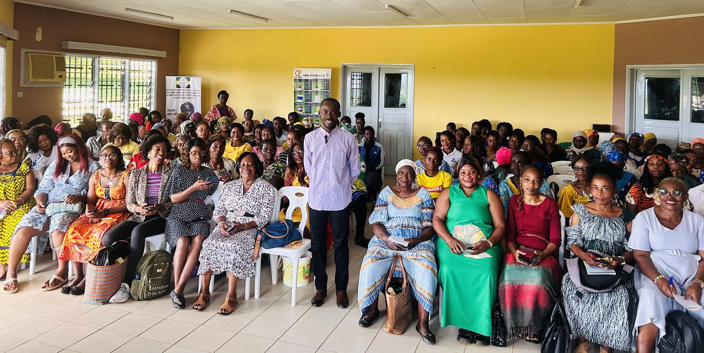
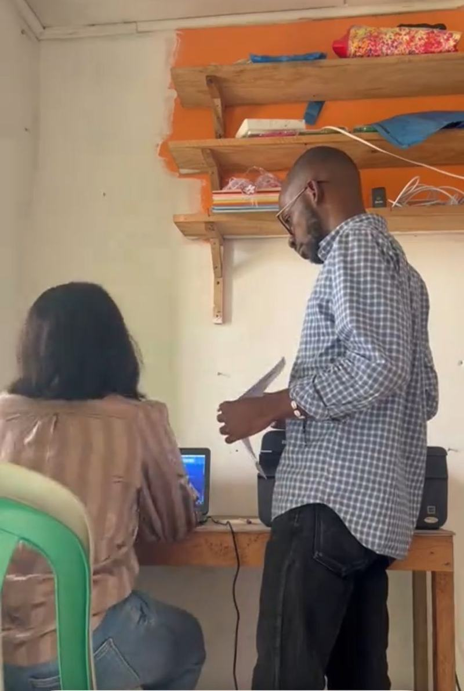

L'IA ne fait pas le travail à votre place. Elle vous apprend à mieux le faire.
Six compétences concrètes, applicables dès le lundi matin, en classe comme au bureau.
Résumer un cours en 5 minutes
Transformer 20 pages de leçon en fiche de révision claire, structurée et mémorisable.
Comprendre ce qui bloque
Faire expliquer une notion difficile de trois façons différentes jusqu'à ce que ça devienne évident.
S'entraîner avec des exercices
Générer des QCM, des sujets types et des corrigés adaptés à votre niveau et à votre programme.
Rédiger exposés et rapports
Plan, introduction, argumentation, conclusion : structurer un travail écrit sans jamais copier-coller.
Organiser son temps de révision
Bâtir un planning réaliste jusqu'aux examens et le tenir avec les bons outils numériques.
Utiliser l'IA honnêtement
Vérifier les réponses, citer ses sources, éviter le plagiat : les règles pour rester crédible.
Les quatre logiciels que tout le monde vous demandera
Une initiation guidée, sur poste, pour ne plus jamais être bloqué devant un document à rendre.
Word
Mettre en forme un devoir, un CV, un rapport propre et professionnel.
Excel
Tableaux, calculs de moyennes, graphiques et suivi de notes.
PowerPoint
Construire un exposé qui capte l'attention et se présente bien.
OneNote
Prendre et retrouver ses notes de cours, partout, sans rien perdre.
Une formation pensée pour trois publics
Aucun prérequis technique. Si vous savez allumer un ordinateur ou utiliser un smartphone, vous suivrez sans difficulté.
Élèves
Du collège au baccalauréat.
- Réviser plus efficacement
- Comprendre les cours difficiles
- Préparer les examens sereinement
- Réussir ses exposés
Étudiants
Licence, master, écoles professionnelles.
- Recherche documentaire rapide
- Rédaction de mémoires et rapports
- Analyse de données avec Excel
- Soutenances convaincantes
Adultes & parents
Actifs, enseignants, entrepreneurs.
- Accompagner ses enfants
- Gagner du temps au travail
- Monter en compétences numériques
- Se former en continu
Programme du samedi 12 septembre
De 09h00 à 15h00 — alternance de démonstrations et d'ateliers guidés.
-
08h30
Accueil et installation
Enregistrement des participants, remise du support et vérification du matériel.
-
09h00
Comprendre l'IA sans jargon
Ce qu'elle sait faire, ce qu'elle ne sait pas faire, et pourquoi elle se trompe parfois. Panorama des outils gratuits accessibles au Gabon.
-
10h00
Atelier 1 — Réviser avec l'IA
Résumés, fiches de révision, explications à la demande, QCM d'entraînement. Chacun travaille sur ses propres cours.
-
11h15
Atelier 2 — Rédiger et présenter
Construire un exposé de A à Z : plan, contenu, sources, diaporama. De la consigne au rendu final.
-
12h30
Pause
Échanges libres avec le formateur et entre participants.
-
13h15
Atelier 3 — Word, Excel, PowerPoint, OneNote
Prise en main guidée des quatre outils : mise en forme, calculs, diaporama et prise de notes organisée.
-
14h30
Bonnes pratiques, questions & clôture
Éthique et vérification de l'information, plan de travail personnel, questions ouvertes et remise des attestations.
Dix ans de terrain, mis au service de votre réussite
Qui vous accompagne tout au long de cette journée.
Diplômé en Marketing & Communication, entrepreneur et fondateur d'Olouomo Lab, Moly Lebayi accompagne depuis près de dix ans des marques, des institutions et des particuliers gabonais dans leur transformation digitale. Sa méthode : pas de théorie inutile — on ouvre l'ordinateur, on prend un vrai devoir, un vrai rapport, et on avance ensemble jusqu'au résultat.
- Diplômé en Marketing & Communication — une expertise du message autant que de l'outil
- Près de 10 ans d'expérience en marketing digital auprès d'entreprises et d'institutions
- Entrepreneur, fondateur d'Olouomo Lab — formation, développement et communication digitale
- Formateur depuis 2 ans — plus de 200 personnes formées cette année à l'IA et à la bureautique
« L'intelligence artificielle ne remplacera pas les bons élèves. Mais les élèves qui savent s'en servir prendront de l'avance sur les autres. »
Ils l'ont déjà vécu
Retour sur les formations animées par Moly Lebayi et Olouomo Lab — des salles pleines, des participants de tous âges, et des compétences acquises sur le terrain.


Tout ce que vous vous demandez
Votre question n'est pas dans la liste ? Écrivez-nous sur WhatsApp, nous répondons vite.
La formation est-elle vraiment gratuite ?
Oui, totalement. Aucun frais d'inscription, aucune contribution demandée sur place. Seule condition : s'inscrire à l'avance, car le nombre de places est limité par la capacité de la salle.
Faut-il venir avec un ordinateur ?
C'est vivement recommandé pour profiter pleinement des ateliers. Un ordinateur portable est idéal ; un smartphone permet déjà de suivre la partie consacrée à l'IA. Prévoyez également un cahier et de quoi noter.
Je n'y connais rien en informatique. Est-ce pour moi ?
Absolument. La formation part de zéro et progresse pas à pas. Chaque manipulation est démontrée puis refaite ensemble. Personne n'est laissé en arrière.
Quel âge faut-il avoir ?
La formation s'adresse aux élèves à partir du collège, aux étudiants et aux adultes. Les plus jeunes participants sont les bienvenus accompagnés d'un parent.
Reçoit-on une attestation ?
Oui. Une attestation de participation Olouomo Lab est remise en fin de journée à chaque participant présent sur l'ensemble de la session.
Comment se rendre sur place ?
Rendez-vous à l'Église La Faveur de l'Éternel, derrière la Pédiatrie, à Owendo. En cas de difficulté à localiser le lieu, contactez-nous au 065 62 95 99 — nous vous guiderons.
Comment m'inscrire ?
Cliquez sur le bouton « M'inscrire sur WhatsApp » et envoyez-nous votre nom, votre statut (élève, étudiant ou adulte) et votre établissement le cas échéant. Vous recevrez une confirmation de place en retour.